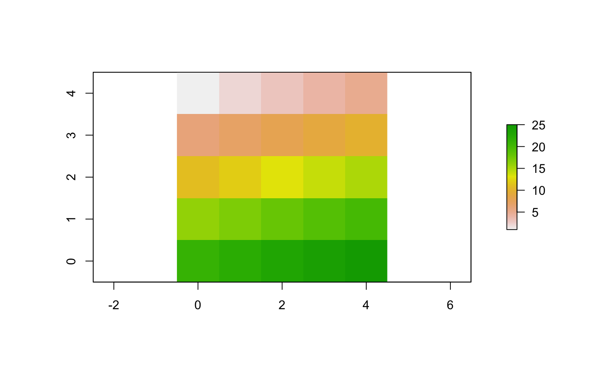

Create a world of patches of class worldMatrix.
createWorld(minPxcor, maxPxcor, minPycor, maxPycor, data = NA) # S4 method for numeric,numeric,numeric,numeric,ANY createWorld(minPxcor, maxPxcor, minPycor, maxPycor, data = NA) # S4 method for missing,missing,missing,missing,missing createWorld()
| minPxcor | Integer. Minimum pxcor for the patches (world's left border). |
|---|---|
| maxPxcor | Integer. Maximum pxcor for the patches (world's right border). |
| minPycor | Integer. Minimum pycor for the patches (world's bottom border). |
| maxPycor | Integer. Maximum pycor for the patches (world's top border). |
| data | Vector of length 1 or length
|
WorldMatrix object composed of
(maxPxcor - minPxcor + 1) * (maxPycor - minPycor + 1)
patches (i.e., matrix cells).
If data is provided, values are assigned by rows.
If no parameters value are provided, default values are:
minPxcor = -16,
maxPxcor = 16, minPycor = -16, and maxPycor = 16.
See help("worldMatrix-class") for more details on the worldMatrix class.
Wilensky, U. 1999. NetLogo. http://ccl.northwestern.edu/netlogo/. Center for Connected Learning and Computer-Based Modeling, Northwestern University. Evanston, IL.
w1 <- createWorld(minPxcor = 0, maxPxcor = 4, minPycor = 0, maxPycor = 4, data = 1:25) plot(w1)